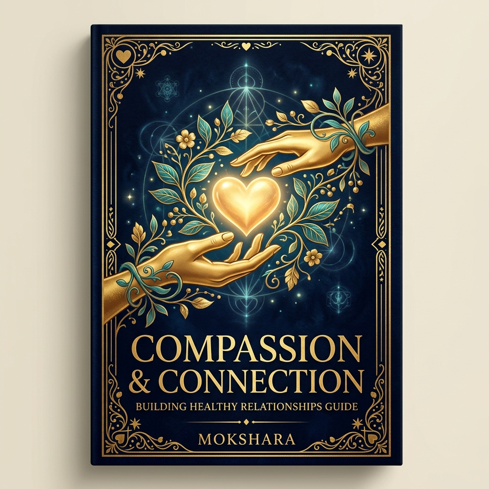
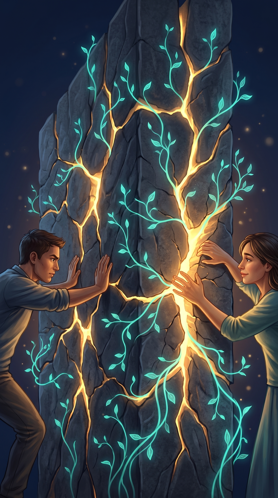
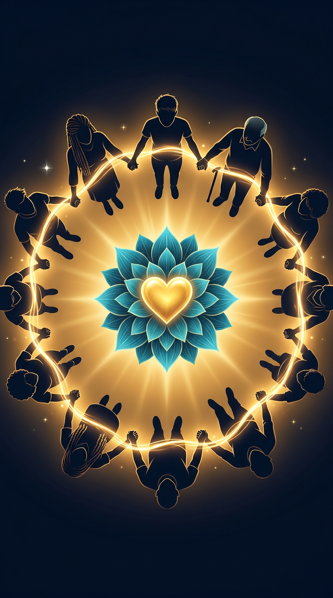

Compassion
& Connection
"The most basic of all human needs is the need to understand and be understood."
— Ralph Nichols
Compassion & Connection
A Mokshara Wellness Publication
© 2026 Mokshara. All rights reserved.
No part of this ebook may be reproduced, distributed, or transmitted
in any form without the prior written permission of the publisher.
This ebook is intended for educational and informational purposes only.
It does not constitute medical or psychological advice.
First Edition — 2026
mokshara.in
Contents

- 01The Power of Listening
- 02Building the Bridge of Empathy
- 03Breaking Communication Barriers
- 04The Circle of Compassion
- 05The Mirror — Compassion for Yourself
The Power of Listening
Most people do not listen to understand — they listen to respond. While someone speaks, we are already composing our reply, preparing our counter-argument, or simply waiting for our turn. This is not listening. This is performing attention while remaining absent.
True active listening is one of the most powerful gifts you can give another human being. When someone feels genuinely heard — not advised, not fixed, not judged, just heard — something remarkable happens neurologically. Their nervous system downregulates. Cortisol drops. Oxytocin (the bonding hormone) rises. The simple act of being listened to is physiologically healing.
The Neuroscience
Research by Dr. Uri Hasson at Princeton University used fMRI to study brains during conversation. He discovered "neural coupling" — when a listener is truly engaged, their brain activity begins to mirror the speaker's. The listener's brain literally synchronises with the speaker's, creating a shared neural state. This is the neuroscience of connection: our brains were designed to resonate with each other.
The HEAR Method of Active Listening
- H — Halt: Stop whatever you are doing. Put down your phone. Turn toward the person. Give them your full physical attention
- E — Empathise: Before responding, silently ask yourself: "What might this person be feeling right now?" Focus on emotions, not just facts
- A — Affirm: Reflect back what you heard — "It sounds like you felt overlooked when that happened." This shows the speaker they have been understood
- R — Respond: Only after halting, empathising, and affirming, offer your response. Ask: "Would you like my thoughts, or did you just need to be heard?" This question alone transforms relationships
Common Listening Mistakes
- Fixing: "You should just…" — People often need presence, not solutions
- Comparing: "That happened to me too, and I…" — This redirects attention away from the speaker
- Dismissing: "Don't worry, it'll be fine" — This invalidates the emotion
- Advising: "If I were you, I would…" — This centres your perspective, not theirs
- Rehearsing: Planning your response while they speak — This makes you absent
When you listen without the need to fix, you give someone the rarest gift in a noisy world: the experience of being fully seen. That alone can begin to heal what words never could.
Building the Bridge of Empathy
Empathy is not the same as sympathy. Sympathy says: "I feel sorry for you." Empathy says: "I feel with you." Sympathy looks down from the edge of someone's pain. Empathy climbs down into it and sits beside them in the dark.
Brené Brown, research professor at the University of Houston, identifies empathy as the antidote to shame. When we share our pain and someone responds with empathy — "I hear you, that sounds incredibly hard" — the shame dissolves. We feel less alone. And in that moment of connection, healing becomes possible.
The Neuroscience
Your brain contains "mirror neurons" — specialised cells that fire both when you perform an action and when you observe someone else performing it. These neurons are the biological foundation of empathy. When you watch someone cry, mirror neurons in your insula and anterior cingulate cortex activate, creating a shadow of their emotional state in your own body. You literally feel a fraction of their pain. Empathy is not a choice — it is built into your neural architecture.
The Three Types of Empathy
Cognitive empathy: Understanding someone's perspective intellectually — "I can see why you feel that way." This is about perspective-taking.
Emotional empathy: Feeling what another person feels — their sadness becomes a shadow of sadness in you. This is automatic and visceral.
Compassionate empathy: Understanding + feeling + being moved to act. "I see your pain, I feel it with you, and I want to help." This is the highest form.
Empathy Strengthening Exercise
- Choose one person you interact with today — a colleague, family member, or stranger
- Before any reaction, pause and silently ask: "What might their day have been like before this moment?"
- Imagine three possible struggles they might be carrying that you cannot see
- Respond to them as if those struggles are real — with 10% more patience and warmth than usual
- Notice how this shift changes the quality of the interaction
Every person you meet is fighting a battle you know nothing about. Empathy does not require you to understand the battle — only to honour the warrior.
Breaking Communication Barriers

Every relationship — romantic, familial, professional — lives or dies by the quality of its communication. And most communication breakdowns are not about what is said, but how it is received. The gap between intention and interpretation is where most conflict lives.
Marshall Rosenberg's Non-Violent Communication (NVC) framework provides a scientifically grounded method for bridging this gap. NVC replaces blame, criticism, and defensiveness with a four-step process that creates understanding even in the most heated moments.
The 4 Steps of Non-Violent Communication
- Observation (not evaluation): Describe what happened factually, without interpretation. Instead of "You never listen to me," say: "In the last two conversations, I noticed you were looking at your phone while I was talking"
- Feeling (not thinking): Express the emotion this creates in you. "When that happens, I feel unimportant and disconnected"
- Need (not strategy): Identify the universal human need behind the feeling. "I need to feel that my words matter to you"
- Request (not demand): Make a specific, actionable, positive request. "Would you be willing to put your phone away when we talk about important things?"
The Neuroscience
When someone hears criticism or blame, their amygdala activates within 0.07 seconds — faster than conscious thought. They enter fight-or-flight before your sentence is even finished. NVC bypasses this by removing evaluative language. When statements begin with observations and feelings (instead of "you always" or "you never"), the listener's amygdala remains calm, and the prefrontal cortex stays engaged — allowing genuine processing and empathy.
Communication Upgrades
- Replace "but" with "and": "I love you but you frustrate me" → "I love you and I feel frustrated right now"
- Replace "you" with "I": "You make me angry" → "I feel angry when this happens"
- Replace "always/never" with specifics: "You never help" → "This week, I handled dishes alone three times"
- Ask before advising: "Would you like my opinion, or would you prefer I just listen?"
- Pause before reacting: 6 seconds of silence allows the amygdala's hijack to fade
Behind every criticism is an unmet need. Behind every argument is a longing to be understood. When you learn to hear the need behind the noise, conflict transforms into connection.
The Circle of Compassion

Human beings are not designed for isolation. We are social mammals whose nervous systems are literally wired for co-regulation — the process of calming each other through proximity, tone of voice, and safe touch. Loneliness is not just emotionally painful — it is a medical risk factor as severe as smoking 15 cigarettes a day.
A 2023 meta-analysis published in Nature Human Behaviour, covering 90 studies and 2.2 million participants, confirmed that chronic loneliness increases the risk of premature death by 26%. But the inverse is equally powerful: strong social bonds increase lifespan, improve immune function, reduce cardiovascular risk, and dramatically lower rates of depression.
"We don't heal in isolation, but in community."
— S. Kelley HarrellBuilding Your Compassion Circle
Community does not require dozens of people. Research by Robin Dunbar at Oxford shows that the innermost circle of close relationships typically contains just 5 people — those you would call in a genuine crisis. The quality of these bonds matters infinitely more than quantity.
Strengthening Your Bonds — Weekly Practice
- The 3-Minute Call: Each day this week, call one person you care about — not to ask for anything, just to say "I was thinking of you." Average call: 3 minutes. Impact: profound
- The Gratitude Text: Send one specific appreciation message: "I've been thinking about how you helped me during [specific moment]. Thank you"
- The Shared Vulnerability: With one trusted person, share something you are struggling with. Vulnerability is the currency of deep connection
- The Compassion Meditation: Sit quietly. Bring to mind someone you love, someone neutral, and someone difficult. Send each the same wish: "May you be happy. May you be healthy. May you be safe. May you live with ease"
You were never meant to carry everything alone. Connection is not weakness — it is the deepest human strength. One genuine bond can hold more weight than all your willpower combined.
The Mirror — Compassion for Yourself
We are often our own harshest critic. The voice inside that says "you're not good enough," "you should have known better," "everyone else has it together" — this inner critic speaks with a cruelty we would never direct at someone we love. And yet, we accept it as truth because it sounds like our own voice.
Dr. Kristin Neff, the pioneering researcher of self-compassion at the University of Texas, defines it through three components: self-kindness (treating yourself with the warmth you'd offer a friend), common humanity (recognising that suffering is shared, not isolating), and mindfulness (acknowledging pain without being consumed by it).
The Neuroscience
Self-criticism activates the amygdala and releases cortisol — your body treats your own harsh words as a threat. Self-compassion, in contrast, activates the mammalian caregiving system, releasing oxytocin and endorphins — the same neurochemicals released when you comfort a loved one. A 2019 study in Clinical Psychology Review analysed 79 studies and found that self-compassion was significantly associated with lower anxiety, depression, and stress, and higher well-being and resilience.
The Self-Compassion Break
- Acknowledge the pain: Place your hand on your heart. Say: "This is a moment of suffering." (This is mindfulness — naming reality without denial)
- Normalise it: "Suffering is part of being human. I am not alone in this." (This is common humanity)
- Offer kindness: "May I be kind to myself in this moment. May I give myself the compassion I need." (This is self-kindness)
- Ask the Friend Question: "If my dearest friend were feeling exactly what I feel right now, what would I say to them?" — Then say those exact words to yourself
"Talk to yourself like someone you love."
— Brené BrownRewriting the Inner Critic
- Critic says: "I'm such a failure" → Compassion says: "I'm struggling right now, and that's human"
- Critic says: "Everyone else is doing better" → Compassion says: "I can only see their surface, not their struggles"
- Critic says: "I should be over this by now" → Compassion says: "Healing takes exactly as long as it takes"
- Critic says: "I don't deserve rest" → Compassion says: "Rest is not a reward — it is a need"
You have spent your whole life learning to love others. The most revolutionary act left is to turn that same love inward — toward the one person who has needed it most all along.

May You Be Seen, Heard, and Held
Connection is not a luxury. It is the foundation upon which all healing, growth, and meaning are built. The practices in this book are bridges — between you and others, and between you and yourself.
Start with one conversation. One moment of genuine listening. One act of self-kindness. That is enough to change everything.
Relax. Heal. Rise.